Symmetries in QM¶
Time and Space Translation¶
First of all I want to know what is not changed or what is the invariant quantity in a transformation.
There are three kind of common transformations.
- Time translation: move the system in time. In this sense time translation is just the time evolution operator or propagator.
- Space translation: move the system in space.
- Gauge transformation
The invariance of them corresponds to:
- Time translation invariance (T.T.I.) means the evolution of the system is not changing under time translations. Hamiltonian is invariant.
- Space translation invariance (S.T.I.) means that the
Time Translation Symmetry¶

Time translation Gliffy Source
Definition of Time Translation
Move the system in time.
Generator of Time Translation
T.T.I. is generated by Hamiltonian which can be easily understood by looking into Shcrödinger equation.
Hint
Starting from Schrödinger equation,

Then we get the state after a evolution of time  ,
,
Time translation symmetry means the state evolution in the same time interval no matter when to start the evolution. Mathematically,

should get the same final state if we start from some other time ,
That means the two Hamiltonian should be the same. Now we reach the conclusion that Hamiltonian is time independent.
The logic is to prove that Hamiltonian is time independent by using infinitesimal time translation approach. Given that Hamiltonian is time independent, we imediately know that time translation operator is just the propagator with the form

All other conclusions come from the fact that Hamiltonian is a constant of motion.
Hint
Ehrenfest theorem tells us that time independent Hamiltonian is a constant of motion.
Important
For an isolated system, T.T.I. should always be satisfied because there is nothing more else to change the system but to leave the system with energy conserved.
My concern is if we don’t have an Hamiltonian for , we can’t actually says this because of what the second law of thermodynamics tells us.
Space Translation Symmetry¶

Space Translation Gliffy Source
S.T.I. is generated by canonical momentum. This is not so obvious as time translation. To prove this we need to understand what space translation really means.
Definition of Space Translation
Space translation means we change the position of the system by some spatial distance  . In math this means a transformation from
. In math this means a transformation from  to where the plus sign is by definition. We invent this space translation operator,
to where the plus sign is by definition. We invent this space translation operator,
Space Translation Applied to States
Next we can obtain the result of space translation operator applied to state in position basis
where we used the relation
which of course is because the normalization of coordinate basis tells us that space translation operator is unitary,
Generator of Space Translation
Similarly to time translation, we can find out the generator out of this definition. For infinitesimal translation,
i.e.,
which shows that the generator of space translation is momentum operator.
From Infinitesimal to Finite Space Translation
Now we have the explicity expression for space translation operators.
Space Translation on Operators
- Use the invariant scalar – inner product.
- Passive vs Active
Space Translational Invariance
Space translational invariance of arbitary operator is
is equivalent to
We say some system has space translational invariance we mean the Hamiltonian is space translational invariant,
Such a system has space translational invariance.
Hint
I once thought Hamiltonian is space/time translational invariant is not enough for the statement that the whole system is invariant under space or time translation for all observables. Of course I was wrong. Once the Hamiltonian and initial condition is given the whole system can be determined completely in principle.
Gauge Symmetry¶
Global Gauge Transformation¶
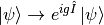
All quantum states are invariant under such transformation. This is not a nonsene transformation because the two states are different in some sense if we put them in a phase space where the phase factor assigns a position for the state vector in the phase space and we can see the difference directly in this image.
The invariant thing is the probability density which is obvious.
Note
This is global because the phase factor doesn’t depend on position and time.
Local Gauge Transformation¶
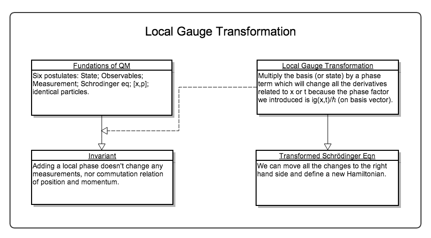Local Gauge Transformation Gliffy Source
What if we have a local phase factor: 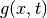?
One way of implenment this phase factor is to transform the basis, for example:
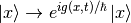
By changing the basis, we can transform anything on position basis. Since the first principle of QM is Schrödinger equation, we would like to check what happens to that.
It turns out that both space derivative and time derivative of the wave function changed. For both of them,
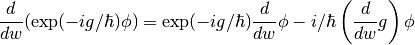
equivalently, we can just change all the derivatives to
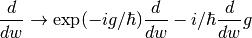
where 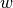 can be  or
or  .
.
Parity¶
Logic¶
The only thing we need is the definition:
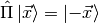
Starting from that, we can derive properties.
Hermition? The way to find out something is Hermition or not is to take the Hermitian conjugate of the inner product sandwiched by the operator.
We know
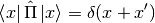
Take the Hermitian conjugate of the whole expression,
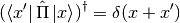
We know the LHS is 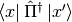. So we have
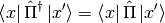
Then we get that parity operator is Hermitian.
Inversion? Parity operator is Unitary.
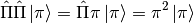
By physics we know that parity twice gets back to the original state. So 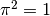 . Then we can find inverse parity operator. What’s important is that it’s unitary.
Acts on states? From definition, we need to go to position basis.
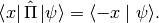
We can also find the results on momentum eigenbasis, which is
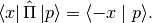
We already know mometum eigen state in postion is some kind of plane wave and it’s easily proved that 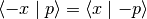 .
Commutators with any observables? Just sandwich 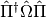 then act on arbitary state and put it into position basis.
As an example, find commutation relation with position operator.
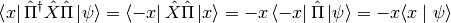
which is 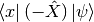. This proves the following equation.
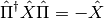
which can also be interpreted as passive transformation.
Another example is the commutation relation with (canonical) momentum.
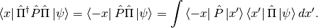
By carefully applying parity on position basis, we have
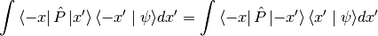
Because commutation relation tells us
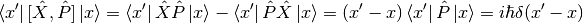
Here comes the keypoint. Recall that
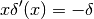
we know that
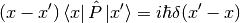
gives us the expression of momentum in position basis,
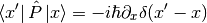
So to continue our calculation of parity applied to momentum,
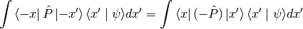
So we can prove that mometum actually invserses when parity is applied to it.